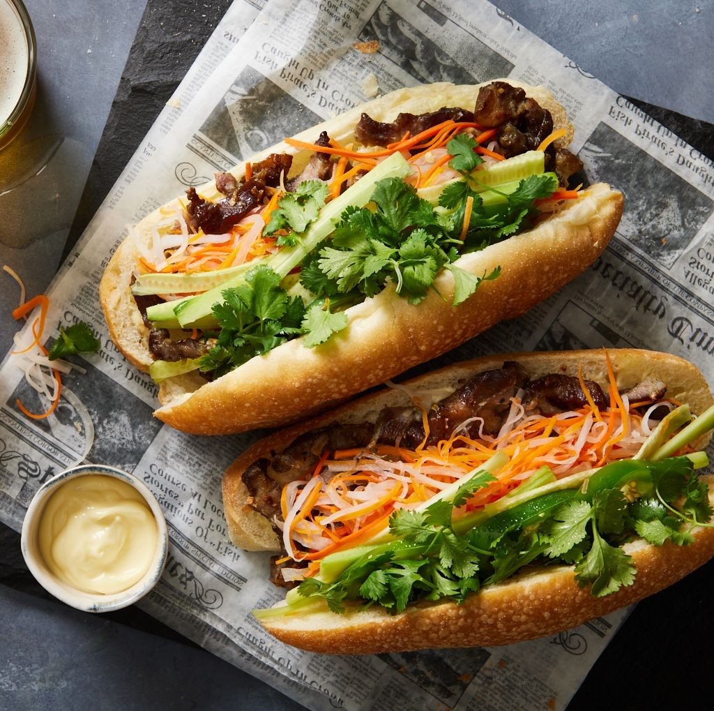

Banh mi kep thit

Description
Imagine the crunchiness of the bread alongside the chewiness of assorted sausages, topped with creamy pate and
fresh herbs. Heavily influenced by the French, this is one of the top tier Vietnamese breakfast dishes. They are
quick and convenient but very delicious and nutrious at the same time
Ingredients
- Assortment of sasauges
- Baguette
- Sliced cold cuts
- Cucumber
- Fresh herbs (cilantros, lettuce, mint)
- Butterrrr
\
- Sauces (chilli, fish, soy)
Steps
- Slice open the baguette leaving an opening to put the ingredients
- SPresentation is up to you, get personal, customize your own flavor profile with the sauces
- Heat it up in the oven to guarantee crunchiness
- Leave no crumbs please